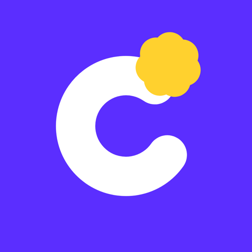

友だちから、
チアるに招待が届きました
同じ大学の友だちについての、ほめる質問に答えて、4人から1人を選ぶアプリです。
選ばれた人には、こう届きます
1年の女子から、チアが届いたいるだけで
場が明るくなる人
場が明るくなる人
安心して使えるように
- 質問は、ほめる・笑える内容だけ
- 選ばれた人に届くのは、基本は「学年と性別」だけ（会員〈有料〉などには、頭文字や名前が見えることがあります）
- 18歳以上の大学生・大学院生だけが使えます。いまは東京の大学から順に開放中です
- いやなことがあれば、ブロックと通報ができます
- 入れたら、LINE などに戻って、もう一度このリンクを開く
- 下の「アプリで招待を受けとる」を押す（招待してくれた友だちと、おたがいに友だちになります）
もう入れている人は、このボタンだけ押せばOK。開かないときは、メニュー（…）から Safari で開いてください。